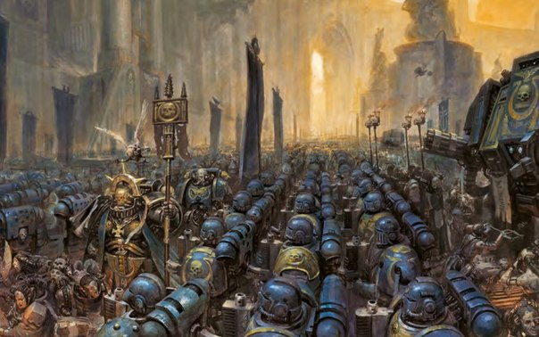
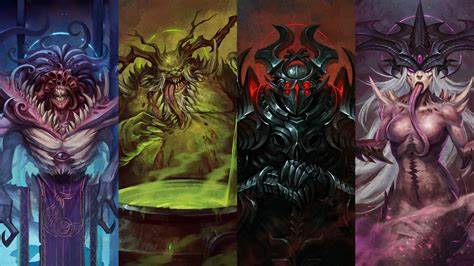
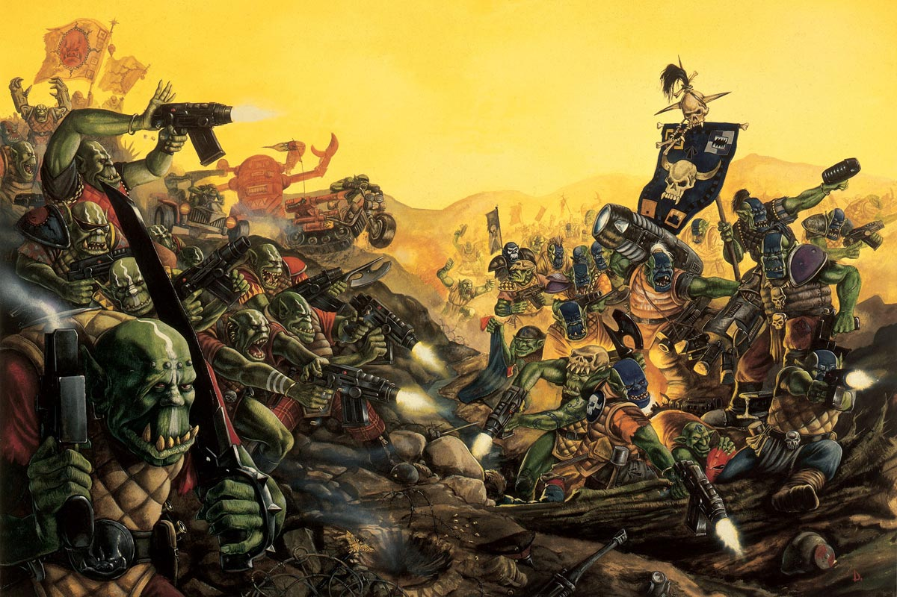
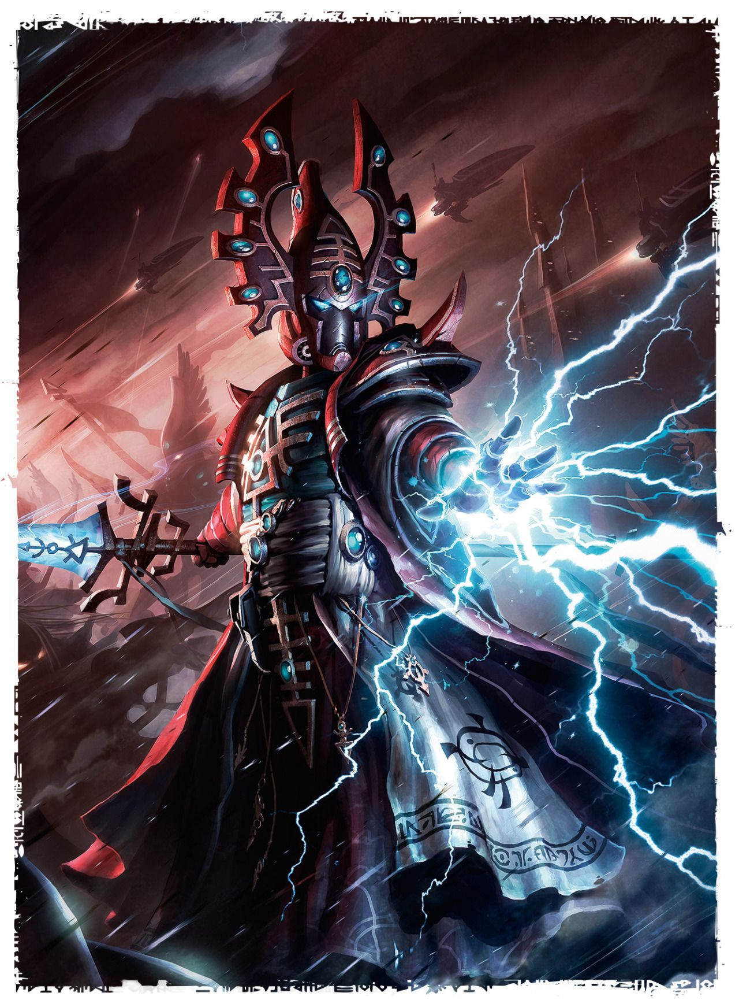
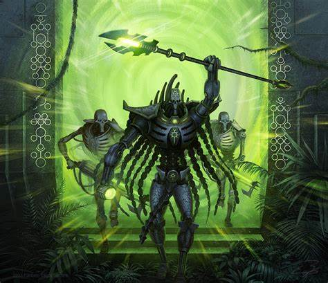
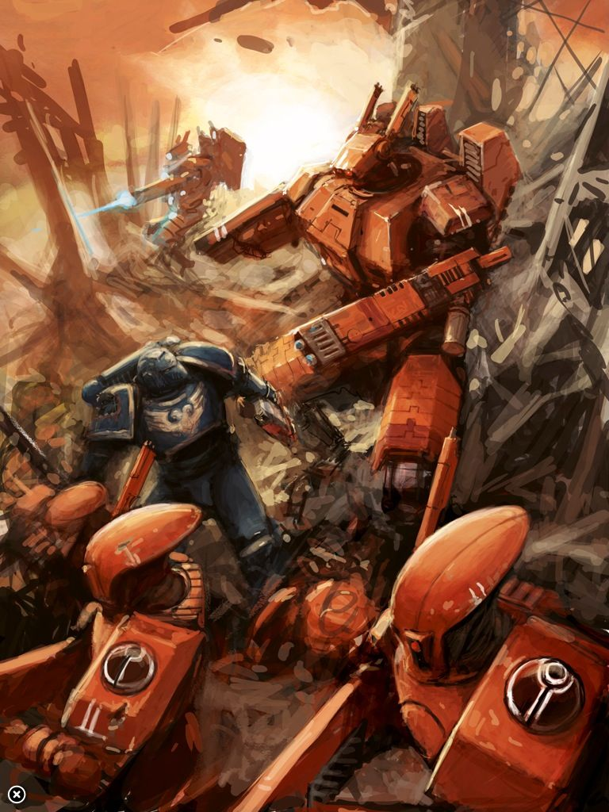

Introduction:
Warhammer 40,000 (also known as Warhammer 40K or simply 40K) is a tabletop wargame and fictional universe developed by Games Workshop. The setting takes place in the far future of the 41st millennium, where humanity has spread throughout the galaxy and is engaged in a constant struggle for survival against various hostile alien races, demonic entities, and other threats.
The universe is characterized by a dark, gothic aesthetic, with a heavy emphasis on the use of technology and religious iconography. The primary faction of humanity is the Imperium of Man, a vast interstellar empire ruled by the immortal God-Emperor of Mankind. The Imperium is divided into countless sub-factions, each with their own unique culture and military forces.
The primary antagonists of the Imperium are the forces of Chaos, which are led by powerful daemon princes and seek to corrupt and destroy all life in the galaxy. Other major factions include the Eldar, a dying race of psychic warriors; the Orks, a brutal and warlike race of alien mercenaries; the Necrons, an ancient race of mechanical beings; and the Tyranids, a swarm of ravenous alien creatures that consume everything in their path.
Imperium:
The Imperium of Man is the largest and most powerful human empire in the galaxy, spanning countless worlds and star systems. It was founded by the legendary figure known as the God-Emperor of Mankind, a being of immense psychic power and unyielding will who has ruled the Imperium for over ten thousand years.
Under the God-Emperor's leadership, the Imperium is fiercely dedicated to the preservation of humanity and the eradication of all its enemies. Its vast military forces include millions of soldiers, from the common Imperial Guard trooper to the genetically-enhanced superhuman warriors known as Space Marines. The Imperium is also supported by a vast network of administrators, bureaucrats, and religious leaders who oversee the empire's day-to-day operations.
Despite its vast size and military might, the Imperium of Man is beset on all sides by enemies. The forces of Chaos seek to corrupt and destroy the Imperium from within, while alien races such as the Eldar, Orks, Necrons, and Tyranids pose a constant threat to its borders.
Within the Imperium itself, there are countless sub-factions, each with their own unique culture and military forces. These include the Space Marines, who are divided into various chapters, each with its own distinct history and traditions; the Imperial Guard, which is made up of countless regiments from different worlds and cultures; and the Adeptus Mechanicus, a faction of tech-priests who are responsible for maintaining and developing the Imperium's advanced technology.
Other notable sub-factions within the Imperium include the Inquisition, a secretive organization dedicated to rooting out heresy and corruption; the Sisters of Battle, an all-female military order dedicated to the God-Emperor's service; and the Adeptus Arbites, a law enforcement agency tasked with maintaining order within the Imperium's cities and settlements.
Overall, the Imperium of Man is a vast and complex empire, one that is constantly threatened by enemies both internal and external. It is held together by the iron will of the God-Emperor and the dedication of its countless servants, all of whom are willing to lay down their lives in defense of humanity.
Chaos:
The Chaos factions in Warhammer 40K are a diverse group of renegades and heretics who have turned away from the Imperium of Man and embraced the dark powers of the Warp. They are led by powerful champions and daemon princes, who have been gifted with immense power by the Chaos Gods.
The four major Chaos Gods are Khorne, the Blood God; Nurgle, the Lord of Decay; Tzeentch, the Changer of Ways; and Slaanesh, the Prince of Excess. Each Chaos God represents a different aspect of chaos and corruption, and their followers embody these traits in their beliefs and actions.
Khorne is the Chaos God of war and bloodshed, and his followers are brutal warriors who seek only to spill blood and glory in battle. Khorne's symbol is the skull, which represents the violent and unyielding nature of his followers.
Nurgle is the Chaos God of decay and disease, and his followers are plagued with physical mutations and grotesque diseases. They see Nurgle's gifts as a blessing, and they spread sickness and decay wherever they go. Nurgle's symbol is the three-headed fly, which represents the cycle of decay and rebirth.
Tzeentch is the Chaos God of change and manipulation, and his followers are sorcerers and tricksters who seek to bend reality to their will. Tzeentch's symbol is the bird of prey, which represents his followers' desire for power and control.
Slaanesh is the Chaos God of pleasure and excess, and his followers indulge in all forms of hedonism and debauchery. They seek the ultimate experience, no matter the cost to themselves or others. Slaanesh's symbol is the serpent, which represents the temptation and seduction of his followers.
Each of these Chaos Gods has their own champions and daemon princes, who embody the traits and powers of their patron deity. The most powerful of these are known as the Chaos Primarchs, who were once loyal Space Marine commanders before turning to Chaos. They include figures like Abaddon the Despoiler, the leader of the Black Legion; Magnus the Red, the daemon prince of Tzeentch; and Mortarion, the plague-ridden lord of Nurgle.
Overall, the Chaos factions represent a perversion of the order and stability of the Imperium of Man, and their followers seek only to spread chaos and destruction wherever they go.
Orks:
The Orks are a race of brutal, warlike aliens in Warhammer 40K, known for their love of battle and their savage strength. They are a technologically advanced species, but their technology is crude and often cobbled together from scraps and salvage.
The Orks are divided into various clans and warbands, each led by a powerful Warboss who has proven his strength and cunning in battle. Warbosses are the ultimate authority within their clan, and they are surrounded by a retinue of Nobs, elite Ork warriors who serve as their bodyguards and advisers.
The Orks also have a unique power structure known as a Waaagh!, which is essentially a massive military campaign led by a powerful Warboss. A Waaagh! is a gathering of Orks from various clans and warbands, all united under a common cause and a shared desire for battle and conquest.
Currently, the Orks are led by Ghazghkull Mag Uruk Thraka, one of the most feared and respected Warbosses in the galaxy. Ghazghkull is a towering figure, even by Ork standards, and he has an unquenchable thirst for battle and glory. He is known for his cunning tactics and his ability to inspire his followers to feats of incredible bravery and savagery.
Under Ghazghkull's leadership, the Orks have launched a massive Waaagh! known as the Great Waaagh!, which has swept across the galaxy, leaving destruction and carnage in its wake. Ghazghkull's ultimate goal is to conquer the Imperium of Man and establish an Ork-dominated empire that spans the stars.
Overall, the Ork faction is a chaotic and unpredictable force, one that is driven by a never-ending desire for battle and conquest. While their technology is crude, they make up for it with sheer brute strength and an indomitable will to win. With Ghazghkull Mag Uruk Thraka at the helm, the Orks are a force to be reckoned with, and their enemies would do well to fear their approach.
Eldar:
The Eldar are a race of ancient and highly advanced aliens in Warhammer 40K, known for their incredible speed, agility, and psychic abilities. They are a dying race, their numbers greatly diminished since the fall of their ancient empire, and their fate is closely tied to the fate of the galaxy itself.
The Eldar are divided into various sub-factions, each with their own beliefs and customs. The largest of these sub-factions are the Craftworld Eldar, who travel through the void of space on massive city-ships known as Craftworlds. The Craftworld Eldar are led by a council of Farseers, powerful psychics who can glimpse into the future and guide their people towards a better fate.
Another major sub-faction are the Dark Eldar, also known as the Drukhari. The Dark Eldar are a twisted and sadistic faction who revel in pain and suffering. They live in a city known as Commorragh, hidden in the depths of the Webway, and they are led by powerful archons who rule through fear and brutality.
The Harlequins are a small but influential sub-faction of Eldar who are devoted to the Laughing God, a mysterious entity that embodies the joy and mystery of life. The Harlequins are known for their dazzling performances and their ability to manipulate reality through dance and illusion.
The current leaders of the Eldar are largely unknown, as they are a highly secretive race who keep their inner workings hidden from outsiders. However, it is known that the Farseers of the Craftworld Eldar are among the most powerful and respected leaders of their people, and their influence extends far beyond their own Craftworlds.
The power structure of the Eldar is complex and multifaceted, with various factions and sub-factions vying for power and influence. The Craftworld Eldar are organized around a series of councils and councils of war, each led by a Farseer or Autarch, who are responsible for making strategic decisions and guiding their people towards victory.
The Dark Eldar, on the other hand, are ruled by a series of powerful Archons, who control various aspects of Dark Eldar society through fear and intimidation. The Harlequins, meanwhile, are organized into various troupes, each led by a Great Harlequin, who is responsible for ensuring the survival and success of their troupe.
Overall, the Eldar are a complex and enigmatic race, one with a rich history and culture that spans thousands of years. While they may be outnumbered and outgunned by many of their enemies, their advanced technology, incredible psychic abilities, and fierce determination make them a formidable force to be reckoned with.
Necrons:
The Necrons are an ancient and technologically advanced race of undead beings in Warhammer 40K, known for their unrelenting determination and their fearsome weapons. They were once a flesh-and-blood species, but they chose to undergo a process known as biotransference, which transformed them into living metal constructs, granting them immortality and incredible powers.
The Necrons are ruled by a series of powerful dynasties, each led by a Necron Overlord who wields immense power and authority over their subjects. These dynasties were once locked in a bitter civil war known as the War in Heaven, but they have since united under the leadership of the Silent King, Szarekh.
Szarekh is one of the most powerful and enigmatic figures in the galaxy, a being who has lived for millions of years and who has seen the rise and fall of countless civilizations. He is a master strategist and a skilled warrior, and he wields a powerful staff that can control the very fabric of reality.
The Necrons' power structure is highly centralized, with each dynasty ruled by a single Overlord who has absolute authority over their subjects. These Overlords are supported by a hierarchy of lesser Necron lords and warriors, each of whom has their own specific role to play within the dynasty.
The Necrons also possess a unique technology known as the Necron pylons, which are massive structures that can channel the power of the universe itself. These pylons are incredibly powerful, and they are often the target of other races seeking to harness their power.
T'au:
The T'au are a relatively young race in Warhammer 40K, known for their advanced technology and their philosophy of the Greater Good, which emphasizes cooperation and unity among all sentient beings. The T'au Empire is led by the Ethereals, a caste of highly respected and revered leaders who are believed to possess a unique psychic ability that allows them to instill a sense of loyalty and duty in their subjects.
The T'au Empire is divided into several sub-factions, each with their own unique characteristics and beliefs. The largest of these sub-factions are the Fire Caste, who are the T'au's main military force, and the Earth Caste, who are responsible for building and maintaining the T'au's technology and infrastructure.
Another major sub-faction are the Water Caste, who are the diplomats and negotiators of the T'au Empire. The Water Caste are skilled at persuasion and diplomacy, and they play a crucial role in maintaining the T'au's alliances and trade relationships.
The current leader of the T'au Empire is the Ethereal Supreme, Aun'va, who is the spiritual and political leader of the T'au people. Aun'va is highly respected and revered by his people, and he is believed to possess incredible wisdom and insight.
The T'au power structure is highly centralized, with the Ethereals at the top of the hierarchy, followed by the Fire Caste, Earth Caste, and Water Caste. Each caste has its own specific role to play within the empire, and there is little room for individualism or dissent.
The T'au are known for their advanced technology, including their highly advanced battlesuits and energy weapons. They also possess powerful psychic abilities, which they use to influence the minds of their enemies and allies alike.
Overall, the T'au are a highly organized and highly disciplined faction, one that is driven by a desire to create a better future for all sentient beings. While they may be relatively young and inexperienced compared to some of the other races in the galaxy, their advanced technology and unique philosophy make them a formidable force to be reckoned with.
